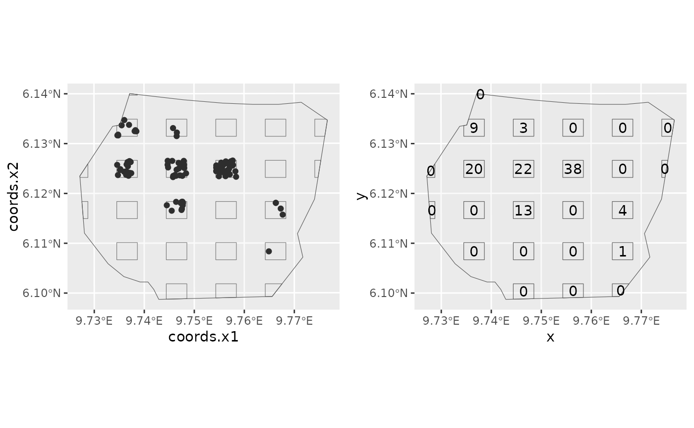

Converts a plot sample with locations of each point within each plot, into a plot sample with only the count within each plot.
Arguments
- plots
A
SpatialPolygonsDataFrameobject containing the plots that were sampled.- dets
A
SpatialPointsDataFrameobject containing the locations of the points within the plots.
Examples
# \donttest{
# Some features require the raster package
if (bru_safe_sp() &&
require("sp") &&
require("raster", quietly = TRUE) &&
require("ggplot2", quietly = TRUE)) {
data(gorillas, package = "inlabru")
plotpts <- plotsample(gorillas$nests, gorillas$boundary,
x.ppn = 0.4, y.ppn = 0.4, nx = 5, ny = 5
)
p1 <- ggplot() +
gg(plotpts$plots) +
gg(plotpts$dets) +
gg(gorillas$boundary)
countdata <- point2count(plotpts$plots, plotpts$dets)
x <- coordinates(countdata)[, 1]
y <- coordinates(countdata)[, 2]
count <- countdata@data$n
p2 <- ggplot() +
gg(gorillas$boundary) +
gg(plotpts$plots) +
geom_text(aes(label = count, x = x, y = y))
multiplot(p1, p2, cols = 2)
}
#> Regions defined for each Polygons
#> Regions defined for each Polygons
#> Regions defined for each Polygons
#> Regions defined for each Polygons

# }